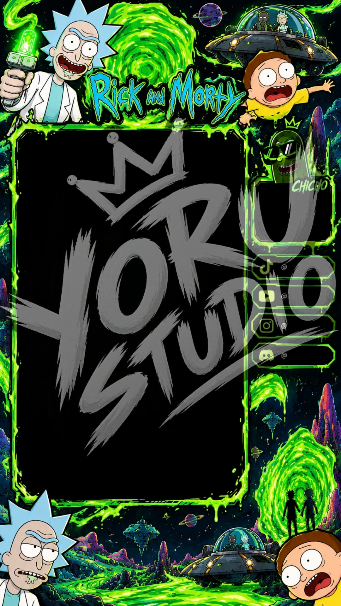

夜 · archivo creativo
proyectos seleccionados.
Diseño, código y experiencias visuales.
Una muestra de las soluciones y piezas gráficas que construimos. Cada proyecto tiene un objetivo claro y una identidad propia.
YORU STUDIO / 夜
WORK ARCHIVE01 / portafolio
trabajos
recientes.
Piezas gráficas y digitales creadas para marcas, creadores de contenido y proyectos independientes.

Gaming & Branding
Banners para Streamers
Identidad visual y arte digital.

Diseño Web & Arte
Diseño para Creadores
Banners de alto impacto.

Arte Digital
Portadas Personalizadas
Recursos visuales únicos.
¿tienes una idea?
podría ser el
próximo proyecto.
Si quieres desarrollar algo, podemos conversar sobre tu propuesta y hacer que sea el siguiente caso de estudio de esta galería.